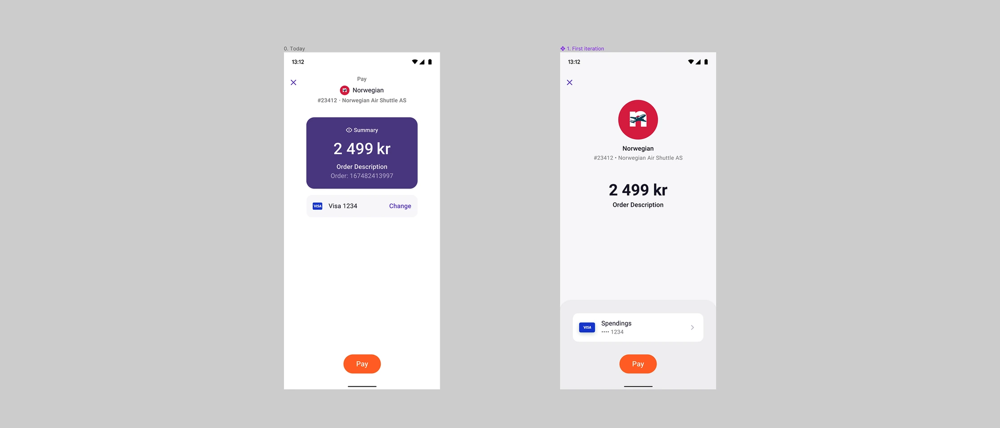
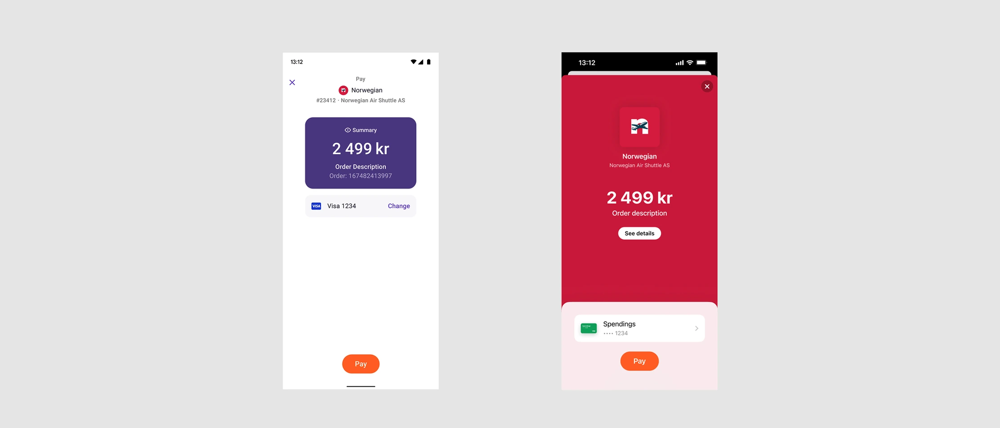

Vipps · Large Customers
Making Vipps payments easier to understand
While working in Vipps’ Large Customers area, I uncovered a problem hidden in plain sight.

Customers were confusing payments to other people with payments to businesses. The two experiences looked remarkably similar, despite having different rules.
Personal transfers above a certain amount could incur a fee. Many customers assumed the same applied when paying a business. Around 80% of users believed they could be charged a fee for business payments, even though these were free.

The misunderstanding affected purchasing behaviour. Transaction data showed that customers rarely used Vipps for expensive purchases, preferring cards for larger amounts. There was also a more serious risk: people could be tricked into transferring money to a private individual while believing they were paying a company, losing their money without receiving the goods they expected.
The problem was in plain sight
The interface placed most of its visual emphasis on the amount being paid, while the recipient’s identity was secondary. In the existing checkout, a large purple card dominated the screen, with the merchant’s name and logo appearing much smaller above it.
The similarity between the two payment experiences made it difficult to recognise whether the recipient was a person or a business.
Putting the merchant first
I explored reversing that visual hierarchy. In an early experiment, the merchant’s logo became the primary element, supported by the company name and purchase information. The amount remained visible, but no longer dominated the experience.
The intention was to make the recipient immediately recognisable and help customers understand which type of payment they were making.
This was one part of a wider effort. Other teams introduced clearer explanations within the payment journey, while marketing campaigns reinforced the distinction between personal transfers and business payments.
Impact
What began as an overlooked misunderstanding became a broader effort across Vipps to change how customers understood and used the service.
The discovery connected several problems that had previously seemed separate: customers avoiding larger purchases, low shopping basket values and the risk of mistaking personal transfers for business payments. It gave Vipps a clearer understanding of what needed to change, both in the product and in its communication.
Over roughly two years, teams across Vipps addressed the problem through interface design, clearer explanations and marketing. The proportion of users who believed business payments could incur a fee fell from approximately 80% to 17%. Shopping basket values also increased.
My contribution was identifying the underlying problem, connecting it to customer behaviour and business performance, and helping establish a design direction for making the two types of payment easier to distinguish. The results were achieved through a wider company effort, building on that initial discovery.
Outcomes
Customers incorrectly expecting fees on business payments
-
~80%
Before
-
17%
After